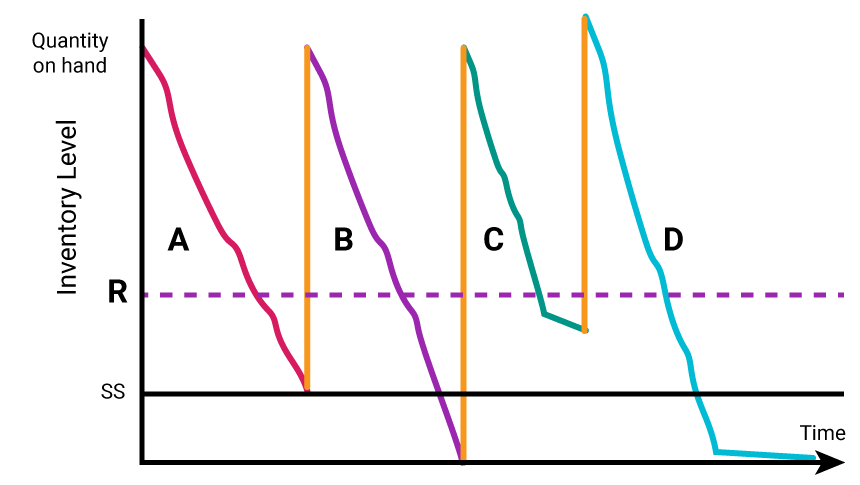

Continuous Review System Scenarios
In real life, a continuous review system does not have a constant demand so let’s take a look at the following example.
For scenario A in Figure 1, sales are occurring in a constant manner. The Reorder goes in at R and sales continue during the leadtime. This one is perfect. Stock runs out just as the quantity on hand reaches the safety stock quantity.
Now, you try. Describe what is happening in B-D scenarios.

Figure 1. Continuous Review System Scenarios
In scenario B, the slope is a little steeper so sales are happening faster. R=ddL uses predicted demand but because it is a little higher, they dip into safety stock. Whew, stock arrives just as we run out. Notice how the quantity just arriving (yellow line) is always the same so the total quantity on hand will be a little lower as we need to replenish the safety stock too.
Demand is higher again but suddenly when reordered, the demand drops (line flattens). So, now the quantity on hand will be higher than the others….remember the same quantity is ordered every time.
Demand is still high. Notice the longer leadtime?...must have been a delay. A Stockout is occurring…the company has sold all the cycle stock and the safety stock and they are without anything to sell….they could be experiencing lost sales and lost customers if they can’t supply their needs.